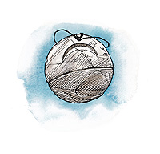

法兰恩（Fharlanghn）
地平线居者
中等神力
圣徽：地平线月盘

居住位面：主物质位面
阵营：绝对中立
神职：地平线，距离，旅行，道路
信徒：吟游诗人，旅行者，商人
牧师阵营：混乱中立，守序中立，中立邪恶，中立善良
领域：机运，保护，旅行
偏好武器：木杖
道路之神法兰恩的样子就像是一位饱经风霜的，脸上布满皱纹，但眼睛依然炯炯有神的老者。他一般身着普通的皮制或是素色亚麻布制的衣服。他看上去总是风尘仆仆的。他就这样在主物质位面里的某一条道路上闲逛着，礼貌地问候着路上遇到的所有旅人。法兰恩喜欢同人们搭讪与攀谈，但从不会交流得太详细。
教义
法兰恩是所有正在野外长途旅行的人的保护者，无论这些人选择了什么样的路或者选择任何方式以到达目的地。
法兰恩认为，人们需要旅行，需要经历些自己没有经历过的事情。世界不是永远一成不变的，而且，你绝不会清楚你是否需要重新申时这个世界，甚至重新找一个家。这时候，追逐着地平线才能找到灵感。
神职人员与牧师
法兰恩的牧师总是在世界的各地旅行，在寻找些什么。他们偏好颜色或棕或淡绿，而样式简单的服装。平日，他们等待在路上为行商队们做礼拜（甚至有时候还和他们通行，作他们的向导），或是去探索未知的地域，或是做军队或是移民者的先导，以及为那些不断跨越地平线的人们写下光辉的记录。他们也会从事翻译和外交家的工作。也有很多法兰恩牧师会以测量员或是工程师的身份参与帮助道路，桥梁与港口的建设。还有一些法兰恩的牧师则从事着大到船只，小到鞋子等各种旅行装备的制造工作。无论他们从事什么样的工作，法兰恩的牧师都很少停留在一个地方很久，而且，如果一个人不只一次去拜访同一所法兰恩的神殿的话，他有可能每次都在那里见到完全不同的一群牧师。
几乎每一条道路的路旁都能找到法兰恩的路边神殿。他的神殿经常是许多旅行者们的休息场所，甚至是他们的庇护所。
法兰恩
吟游诗人20级/牧师20级中体形外界生物
神格等级：14
生命骰：20d8+180（外界生物）加20d6+180（吟游诗人）加20d8+180（牧师）（980hp）
先攻调整值：+21，总是最先行动（+17敏捷，+4精通先攻，绝对先攻）
速度：60尺
防御等级：79（+17敏捷，+14神格等级，+27天生防御，+11偏转）
攻击加值：+5护身木杖 +64/+59/+54/+49近战，+5加速木杖 +64/+64/+59近战；或者法术 +61近战接触，或 +71远程接触
伤害加值：+5护身木杖 1d6+12，+5加速木杖 1d6+8；或者使用法术
占据/威胁范围：5尺*5尺/5尺
特殊攻击：每日14次驱散不死生物，领域神力，超凡神格能力，类法术能力
特性：神格免疫，伤害减免 49/+4，火焰伤害抗力 34，神术自发性施法，理解、交谈及阅读所有语言并直接于任何14里内的生命存在交谈，远程沟通，神祗国度，随意无误传送，随意位面旅行，诗人逸闻知识 +30，每日20次诗人音乐（countersong,inspire competence,inspire courage,inspire greatness,suggestion），SR46，神圣光环（1400尺，DC35）
豁免调整值：坚韧 +55，反射 +63，意志 +53
能力值：力量 24，敏捷 45，体质 28，智力 31，感知 25，魅力 33
技能：估价 +35，唬骗 +53，专注 +69，手艺（毛皮加工） +47，手艺（石工） +47，交涉 +84，训练动物 +48，医疗 +34，躲藏 +54，威吓 +29，跳跃 +23，知识（建筑与工程） +47，知识（地理） +47，知识（自然） +47， 知识（宗教） +47，聆听 +46，潜行 +54，表演 +38，专业（地图制作） +67，专业（工程） +67，专业（草药） +67，专业（航海） +67，专业（书记） +67，专业（测量） +67，骑术（马） +56，探知 +57，察言观色 +57，辩识法术 +57，侦察 +23，游泳 +26，翻滚 +44，使用魔法物品 +48，野外知识 +44。技能检定掷骰自然结果总是取20
专长：警觉，双巧手，格斗反射，制造奇物，闪避，法术强效，忍耐，法术扩大，专家，法术扩展，法术提升，精通卸除武器，精通先攻，精通双武器格斗，法术极效，机动，飞跑，跳跃攻击，追踪，双武器格斗
神格免疫：属性伤害，属性吸取，酸，冷，即死效果，疾病，瓦解，电，能量吸取，心智影响效果，麻痹，毒，睡眠，震慑，变形，监禁，放逐。
超凡神格能力：改变形态，改变现实，改变大小，区域神力护盾，天神下凡，神力风暴，创造物品，创造高级物品，神力敏捷，神力护盾，足伤，生命礼物，瞬间移动，区域神力风暴，塑成道路+，大步，绝对先攻，带“+”为独特能力，下文将说明。
领域神力：每日14次重掷不满意其结果的掷骰，每日14次保护结界（结界内对象在下次豁免检定中获得+20的抗力加值，最大持续时间1小时）；每日20轮自由移动
类法术能力：法兰恩可以以相当于施法者等级为24使用其类法术能力。类法术能力的基本豁免DC为35+法术等级。Aid,antimagic field,astral projection,break enchantment,dimension door,entropic shield,expeditious retreat,find the path,fly,freedom of movement,holyaura,locate object,mind bland,miracle,mislead,phase door,prismatic sphere,protection from elements,protection from elements,repulsion,sanctuary,shield other,spell immunity,spell resistance,spell tuming,teleport without error
吟游诗人已知法术（4//7/7/7/6/6/6；基础DC=21+法术等级）：0-detect magic,light,mending,open/close,prestidigitation,read magic;1st-alarm,charm person,grease,unseen servant,ventriloquism;2nd-animal trance,detect thoughts,glitterdust,mirror image,summon swarm;3rd-confusion,emotion,haste,sculpt sound,slow;4th-detect sdrying,hallucinatory terrain,hold monster,improveal invisibility,shout;5th-control water,false vision,mind fog,mirage arcana,mislead;6th-control weather,greater scrying,project image,veil.
每日牧师神术：6/8/8/6/6/5；基础DC=17+法术等级
塑成道路（特有超凡神格能）：在集中精神10分钟之后，法兰恩可以对一个面积为140尺乘140尺，高为10英尺的方型区域进行塑形，以在空间中创造出小路，公路，隧道，或者桥梁。他也可以使用这个能力去清除堵塞了道路的东西，比如风暴或是雪崩在路上留下的大量积雪和残骸。他可以靠减少塑形区域的宽度来增加这个区域的长度，比如，70尺宽乘180尺长或者10尺宽乘1960尺长。这种能力与move earth法术的力量类似，它不是以暴力破坏地面，而是在地面上创造出一个波浪一般的外层，并在这个表面上借助土壤的流动塑造道路的形态。树木，建筑或是岩石，除了它们的相对位置以及高度外，不会受到什么其他影响。
塑形区域可以包括以当地材料建筑而成桥梁和筑堤，比如在跨越于森林中溪流之上的木桥，或是山脚下石质矮墙。
不同于move earth法术，此能力可以影响到岩石，也可以用于制造隧道。而与move earth法术类似的地方在于，用它来困住或是埋葬生物的话，速度太慢了。
财产：法兰恩的法杖，旅者之友，是一件双头武器，每一头都有 +5加值，一头具有护身的特殊魔法效果，另一头则有加速的特殊魔法效果。制造施法者等级为20级，重5磅
其他神格能力
作为一个中等神力，法兰恩在任何掷骰中自动取20，法兰恩在攻击检定和豁免检定掷骰自然值出1时，并不视作必然失败，而是视作普通失败。他是不朽的。
感知：法兰恩可以看见，听见，触摸和嗅到14哩的距离。作为一个标准动作，他能够感知到任何动物，他的信徒，圣迹，与他有关的物体和任何他的名字在一个小时内被说出的地点周围15哩内的一切。他能够立即将他的感知延伸到10个地方。他立即能够在2个地方阻止神格等级等于或者小于他的神的感知力量，时间最长可达14个小时。
神职感知：法兰恩可以在事情的发生前14周，发生后14周，或发生时立刻感知到任何一个团队开始或结束起旅程。他还能感知到任何建造或破坏任何道路，桥梁，隧道或是车辆的事物。
自动动作：法兰恩能够以一个自由动作使用其手艺（毛皮加工），手艺（石工），专业（地图制作），专业（工程），专业（草药），专业（航海），专业（书记），专业（测量）等技能，只要该项任务的DC在25或者更低。他每轮能够完成10个类似的自由动作。
创造魔法物品：法兰恩能够创造任何有关位面内旅行或位面内移动的魔法物品，比如boots of striding and springing或carpet of flying，只要物品的交易价格不超过200000GP。
化身
法兰恩很少使用他的化身，他更喜欢亲身漫游于这个世界之中，但他也仍然会派出化身去帮助一些需要的，或是正打算进行一次伟大冒险的旅行者们。
法兰恩的化身：如同法兰恩的本体，但以下除外：神格等级为7；防御等级65（接触45，措手不及48）；攻击加值：+57/+52/+47/+42近战（1d6+12，+5护身木杖）和 +57/+57/+52近战（1d6+8 +5加速木杖），或法术 +54近战接触或 +64远程接触；特性，伤害减免 42/+4，火属性伤害抗力 27，SR39，神力光环（700尺，DC28），豁免调整值 坚韧 +48，反射 +56，意志 +45；所有技能调整值减7
超凡神格能力：创造物品，创造高级物品，神力敏捷，神力护盾，足伤，瞬间移动，塑成道路+，大步，绝对先攻，带“+”为独特能力，下文将说明。
类法术能力：施法者等级为17级，基本豁免DC为28+法术等级